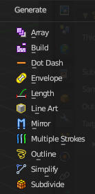
Some of the modifiers are just available for specific object types.
Left grease pencil object, right a mesh object.
Array
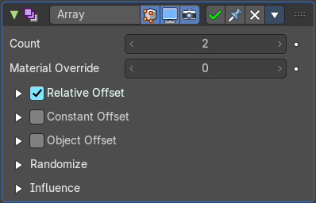
The Array modifier creates an array of copies of the base object. Each copy can offset from the previous one in any of a number of possible ways. Vertices in adjacent copies can be merged if they are nearby, allowing smooth Subdivision Surface frameworks to be generated.
This modifier can be useful when combined with tillable meshes for quickly developing large scenes. It is also useful for creating complex repetitive shapes.
Multiple Array modifiers may be active for an object at the same time. This allows to create complex three-dimensional constructs.
Hint for Offset Calculation. The transformation applied from one copy to the next is calculated as the sum of the three different components (Relative, Constant and Object), each of which can be enabled/disabled independently of the others. This allows, for example, a relative offset of (1.0, 0.0, 0.0) and a constant offset of (0.1, 0.0, 0.0), giving an array of objects neatly spaced along the X axis with a constant 0.1 unit between them, whatever the original object’s size.
| Property | What it changes |
|---|---|
| Count | Number of Items |
| Material Override | Index of the material used for generated strokes. A value of 0 uses the original material. |
Relative Offset subpanel
Factor X/Y/Z
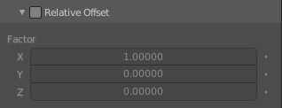
Adds a translation equal to the object’s bounding box size along each axis to the offset, multiplied by a scaling factor. X, Y and Z scaling factors can be specified.
Constant Offset subpanel
Distance X/Y/Z
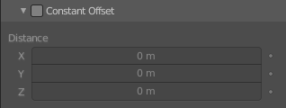
Adds a constant translation component to the duplicate object’s offset. X, Y and Z constant components can be specified.
Object Offset subpanel
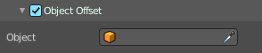
Adds a transformation taken from a chosen object relative to the current object to the offset.
Object
Choose an object.
Randomize
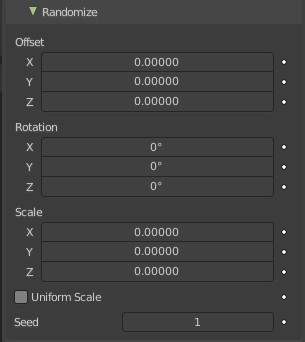
Randomize the transform values.
| Property | What it changes |
|---|---|
| Offset | Randomize the offset values. |
| Rotation | Randomize the rotation values. |
| Scale | Randomize the scale values. · Uniform Scale: Use uniform scaling. |
| Seed | The random seed value. |
Influence subpanel
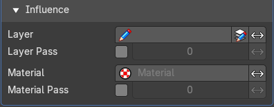
| Property | What it changes |
|---|---|
| Layer | Restricts the effect only to one layer or to any layers that share the same pass index. Click to pick the layer that you want to use. · Invert: Inverts the influence. |
| Layer Pass | The layer pass index. · Use Layer pass: Use the layer pass. · Layer pass value: The layer pass value. · Invert: Inverts the influence. |
| Material | Restricts the effect only to material that share the same material or pass index. Click to pick the material that you want to use. · Invert: Inverts the influence. |
| Material Pass | The material pass index. · Use Material pass: Use the Material pass. · Material pass value: The Material pass value. · Invert: Inverts the influence. |
Build
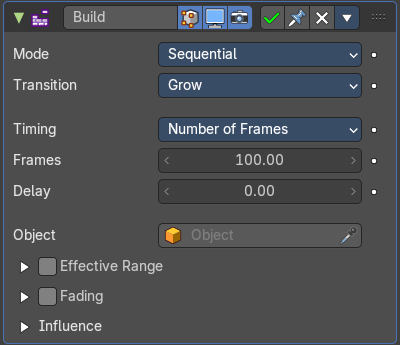
The Build modifier lets the strokes of the grease pencil object appear or disappear over time when you play the animation.
Mode
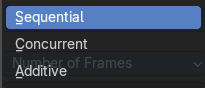
How many strokes are animated at the same time.
Sequential mode
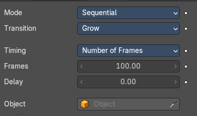
Strokes appear or disappear one after the other.
Transition
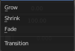
How the strokes are animated. The items should be self explaining.
Timing
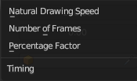
How to calculate the timing of the frames.
Natural Drawing Speed
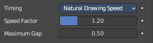
Use recorded speed multiplied by a factor.
| Property | What it changes |
|---|---|
| Speed Factor | Multiply recorded drawing speed by a factor. |
| Maximum Gap | The maximum gap between strokes in seconds. |
Number of Frames
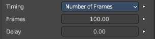
Set a fixed number of frames for all build animations.
| Property | What it changes |
|---|---|
| Frames | Maximum number of frames that the build effect can run. |
| Delay | Number of frames to delay before the modifier has any effect. |
Percentage Factor
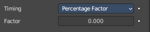
Set a manual percentage to build.
Factor
How much the stroke is visible.
Object
Pick an object as the starting position.
Concurrent Mode
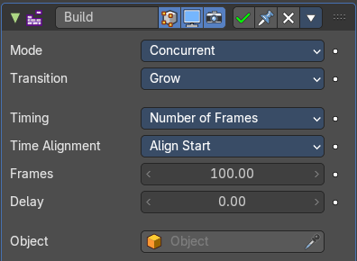
All strokes appear or disappear at once.
Transition
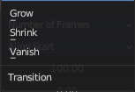
How the strokes are animated.
| Property | What it changes |
|---|---|
| Grow | Grow over the animation time. |
| Shrink | Shrink over the animation time. |
| Vanish | Vanish over the animation time. |
Timing
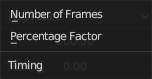
What method to use to build animations. Number of frames, or percentage.
Number of frames
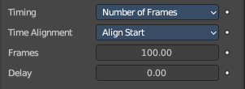
Time Alignment
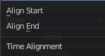
When strokes should start to appear or disappear.
| Property | What it changes |
|---|---|
| Align Start | All strokes appears at the same time. |
| Align End | All strokes disappears at the same time. |
Frames
Maximum number of frames that the build effect can run.
Delay
Number of frames after each GP keyframe before the modifier has any effect.
Percentage Factor
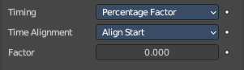
Time Alignment
When strokes should start to appear or disappear.
| Property | What it changes |
|---|---|
| Align Start | All strokes appears at the same time. |
| Align End | All strokes disappears at the same time. |
Factor
How much the stroke is visible.
Object
Pick an object as the starting position.
Additive
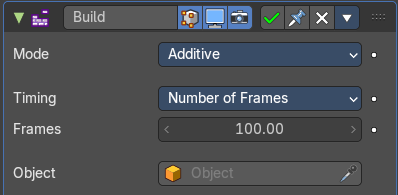
Builds only new strokes. Assumes additive painting.
Timing
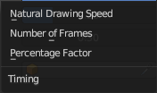
What method to use to build animations.
Natural Drawing Speed
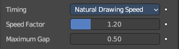
| Property | What it changes |
|---|---|
| Speed Factor | Multiply the recording speed by a factor. |
| Maximum Gap | The maximum gap between strokes in seconds. |
Number of frames
Time Alignment
When strokes should start to appear or disappear.
| Property | What it changes |
|---|---|
| Align Start | All strokes appears at the same time. |
| Align End | All strokes disappears at the same time. |
Frames
Maximum number of frames that the build effect can run.
Delay
Number of frames after each GP keyframe before the modifier has any effect.
Percentage Factor
Time Alignment
When strokes should start to appear or disappear.
| Property | What it changes |
|---|---|
| Align Start | All strokes appears at the same time. |
| Align End | All strokes disappears at the same time. |
Factor
How much the stroke is visible.
| Property | What it changes |
|---|---|
| Start delay | Number of frames after each GP keyframe before the modifier has any effect. |
| Frames | Maximum number of frames that the build effect can run. |
| Object | Pick an object as the starting position. |
Effective Range
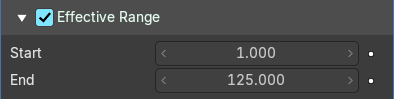
Only modify strokes that lies in the specified time frame.
| Property | What it changes |
|---|---|
| Start | The first frame of the range. |
| End | The last frame of the range. |
Fading subpanel
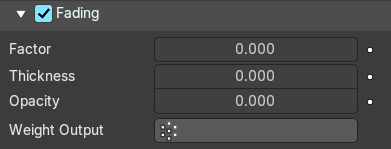
Fade out strokes instead of cutting them off.
| Property | What it changes |
|---|---|
| Factor | The factor for how much the stroke is fading out. |
| Thickness | How much strength fading applies on top of stroke thickness. |
| Opacity | How much strength fading applies on top of stroke opacity. |
| Weight Output | Limit the fade to a vertex group. |
Influence subpanel
| Property | What it changes |
|---|---|
| Layer | Restricts the effect only to one layer or to any layers that share the same pass index. Click to pick the layer that you want to use. · Invert: Inverts the influence. |
| Layer Pass | The layer pass index. · Use Layer pass: Use the layer pass. · Layer pass value: The layer pass value. · Invert: Inverts the influence. |
| Material | Restricts the effect only to material that share the same material or pass index. Click to pick the material that you want to use. · Invert: Inverts the influence. |
| Material Pass | The material pass index. · Use Material pass: Use the Material pass. · Material pass value: The Material pass value. · Invert: Inverts the influence. |
Dot Dash
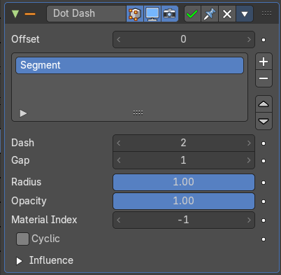
Turns a grease pencil stroke into a dotted line.
Offset
The offset into each stroke before the dot creation starts.
Segment list
Manage the single segments of the dotted dash. Segments gets repeated as they appear in the list. Means when you just have one segment in the list, then this shape will be repeated. When you have two, then the first will be displayed, then the second, then the first, and so on. Every segment can have its own settings. Which are managed below.
| Property | What it changes |
|---|---|
| Add Segment | Add a new dash segment. |
| Remove Segment | Remove the dash segment. |
| Move Dash Segment up or down | Moves the selected dash segment up or down in the list. |
Search element
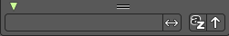
By clicking at the triangle button you reveal a search field with which you can search through the list.
| Property | What it changes |
|---|---|
| Edit Box | Type in the search term and hit enter. |
| Invert | Inverts the search term. |
| Sort by name | Sorts the list alphabetically. |
| Reverse | Inverts the list. |
| Property | What it changes |
|---|---|
| Dash | The number of points (vertices) from the orignal stroke to include in this segment. |
| Gap | The number of points (vertices) skipped after this segment. |
| Radius | The radius of the segment. Maximum is 1 of the original stroke. |
| Opacity | The visibility of this segment. |
| Material Index | What material to use. |
| Cyclic | Enable cyclic on individual stroke dashes. |
Influence subpanel
| Property | What it changes |
|---|---|
| Layer | Restricts the effect only to one layer or to any layers that share the same pass index. Click to pick the layer that you want to use. · Invert: Inverts the influence. |
| Layer Pass | The layer pass index. · Use Layer pass: Use the layer pass. · Layer pass value: The layer pass value. · Invert: Inverts the influence. |
| Material | Restricts the effect only to material that share the same material or pass index. Click to pick the material that you want to use. · Invert: Inverts the influence. |
| Material Pass | The material pass index. · Use Material pass: Use the Material pass. · Material pass value: The Material pass value. · Invert: Inverts the influence. |
Envelope
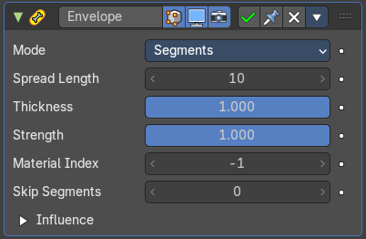
Generates a envelope shape that connects all points in this envelope.
Mode
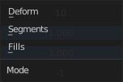
| Property | What it changes |
|---|---|
| Deform | Deform the stoke to best match the envelope shape. |
| Segments | Add segments to create the envelope. Keep the original stroke. |
| Fills | Add Fill segments to create the envelope. This method does not keep the original stroke. |
| Property | What it changes |
|---|---|
| Spread Length | The number of points to skip to create straight segments. |
| Thickness | Thickness multiplier for the thickness of the new stroke. |
| Strength | Strength multiplier for the strength of the new stroke. |
| Material Index | The material index of the material that is used. |
| Skip Segments | Define a number of segments to skip to reduce the complexity. |
Influence subpanel
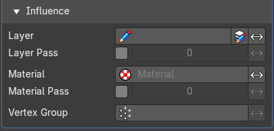
| Property | What it changes |
|---|---|
| Layer | Restricts the effect only to one layer or to any layers that share the same pass index. Click to pick the layer that you want to use. · Invert: Inverts the influence. |
| Layer Pass | The layer pass index. · Use Layer pass: Use the layer pass. · Layer pass value: The layer pass value. · Invert: Inverts the influence. |
| Material | Restricts the effect only to material that share the same material or pass index. Click to pick the material that you want to use. · Invert: Inverts the influence. |
| Material Pass | The material pass index. · Use Material pass: Use the Material pass. · Material pass value: The Material pass value. · Invert: Inverts the influence. |
| Vertex Group | Assign a vertex group to modulate the deform. · Inverse Pass: Inverts the influence. |
Length
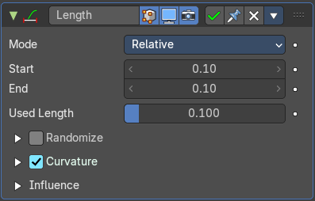
The Length Modifier extends or shortens the original strokes length.
Mode
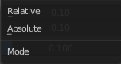
Defines the mode to use for the length calculation. Relative to the length of the grease pencil stroke, or absolute in geometry space.
| Property | What it changes |
|---|---|
| Factor Start/End | Length difference for each stroke. |
| Used Length | What position of the stroke is used for the calculation of the extension. |
Randomize subpanel
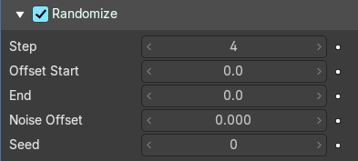
Randomization for the start / end lengths.
| Property | What it changes |
|---|---|
| Step | Number of frames between randomization steps. |
| Offset Start | Size of random length added to the start of each stroke. |
| End | Size of random length added to the end of each stroke. |
| Noise Offset | Smoothly offset the random value of each stroke. |
| Seed | The random seed value. |
Curvature subpanel
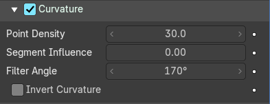
Follow the curvature of the stroke.
| Property | What it changes |
|---|---|
| Point Density | Multiplied by Start/End for the total added point count. |
| Segment Influence | How much the length of the individual segments should influence the final computed curvature. |
| Filter Angle | Ignore points of the stroke that derivate from their neighbours by more than this angle. |
| Invert Curvature | Invert the curvature of the stroke's extension. |
Influence
| Property | What it changes |
|---|---|
| Layer | Restricts the effect only to one layer or to any layers that share the same pass index. Click to pick the layer that you want to use. · Invert: Inverts the influence. |
| Layer Pass | The layer pass index. · Use Layer pass: Use the layer pass. · Layer pass value: The layer pass value. · Invert: Inverts the influence. |
| Material | Restricts the effect only to material that share the same material or pass index. Click to pick the material that you want to use. · Invert: Inverts the influence. |
| Material Pass | The material pass index. · Use Material pass: Use the Material pass. · Material pass value: The Material pass value. · Invert: Inverts the influence. |
Line Art
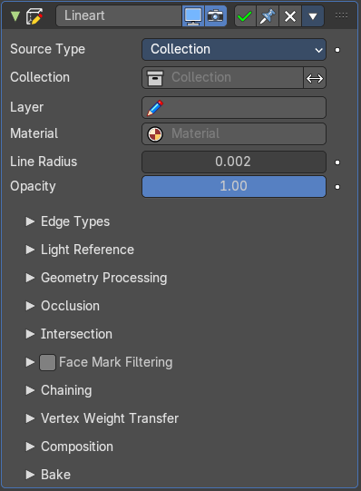
The Line Art modifier generates stylized line art from the scene or selected source collection or objects.
Note that due to lack of global cache at the moment, each Line Art modifier will run the entire occlusion calculation for itself. So if you have multiple line art modifiers to select different parts of the scene (to apply different styles, etc.), the evaluation will take much longer. There are plans to remedy this in the future, but this is a known limitation for now.
This modifier requires to have a ACTIVE camera in the scene, since the outline is created from this active camera. And the outline is created from exact this view of the camera. So better switch to camera view to check if the view fits.
The active camera has the active orange triangle above the widget. You can also see the active camera in the Scene properties.
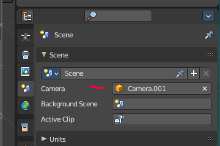
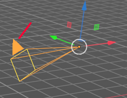
Source Type
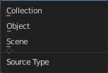
What type of geometry source should line art be generated from.
Collection
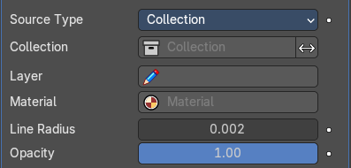
| Property | What it changes |
|---|---|
| Collection | The collection where you want to apply the line art to. · Invert: Inverts the selection of collections. |
| Layer | Grease Pencil layer that is assigned to the generated strokes. |
| Material | Grease pencil material assigned to the generated strokes. |
| Line Radius | The thickness of the line. |
| Opacity | The opacity of the line. |
Object
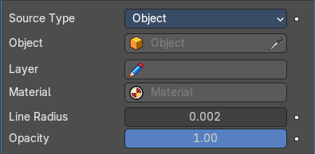
| Property | What it changes |
|---|---|
| Object | The object where you want to apply the line art to. |
| Layer | Grease Pencil layer that is assigned to the generated strokes. |
| Material | Grease pencil material assigned to the generated strokes. |
| Line Radius | The thickness of the line. |
| Opacity | The opacity of the line. |
Scene
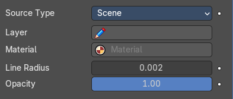
Applies the line art grease pencil strokes to the whole scene.
| Property | What it changes |
|---|---|
| Layer | Grease Pencil layer that is assigned to the generated strokes. |
| Material | Grease pencil material assigned to the generated strokes. |
| Line Radius | The thickness of the line. |
| Opacity | The opacity of the line. |
Edge types subpanel
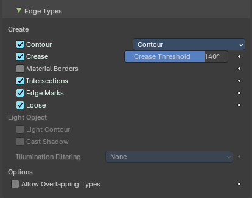
Which kind of edges to influence.
Create
Use Contour
Use a contour.
Silhouette Filtering
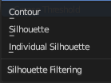
What kind of contour to use.
| Property | What it changes |
|---|---|
| Use Crease | Generate strokes from crease edges. · Crease Threshold: Angles smaller than this value will be treaten as creases. |
| Crease | Influence crease edges. The angle what edges are treaten as creases can be adjusted in the edit box. |
| Material Borders | Generate strokes from borders between materials. |
| Intersections | Generate strokes from intersections. |
| Edge Marks | Generate strokes from edge marks. |
| Loose | Generate strokes from loose geometry. |
Light Object
| Property | What it changes |
|---|---|
| Light Contour | You need to pick a light object in the Light Reference panel. Generate light shadow separation lines from a referenced light object. |
| Cast Shadow | You need to pick a light object in the Light Reference panel. The line casts shadow. |
Illumination filtering
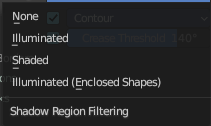
You need to pick a light object in the Light Reference panel. How to thread the shadow region filtering. The names should be self explaining.
Options
Allow Overlaping Types
Allow an edge to have multiple overlapping types.
Light Reference subpanel
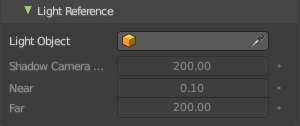
This panel allows you to add a light object as a source for line art.
| Property | What it changes |
|---|---|
| Light Object | Pick the light source. |
| Shadow Camera Size | Represents the orthographic scale of an ortho camera. It calculates the area to cover. |
| Near | The near clip plane of the shadow camera. |
| Far | The far clip plane of the shadow camera. |
Geometry Processing subpanel
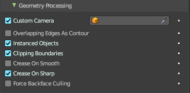
| Property | What it changes |
|---|---|
| Custom Camera | Allows to pick a different camera than the active scene camera for line art rendering. |
| Overlapping Edges as Contour | This option allows overlapping edges (e.g. from an edge split modifier or imported geometry where two edges occupy the exact same space) to be drawn as contour. Enabling this option will slow down the calculation slightly but it will handle edge overlapping cases without erroneous occlusion results. |
| Instanced Objects | This option enables particles and other instanced objects to be loaded for line art calculation. There will be performance impact when there are a large amount of instanced objects in the scene. |
| Clipping Boundaries | When enabled, line art will generate clipping lines as contour type at the place where near or far clipping planes cut the model. Otherwise there will be no lines. |
| Crease on Smooth | Allow crease edges to show inside smooth surfaces. |
| Crease on Sharp | Allow crease to show on sharp edges. |
| Force Back Face Culling | Remove all backfaces to speed up calculation. |
Occlusion Subpanel
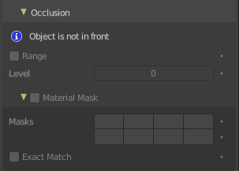
| Property | What it changes |
|---|---|
| Range | If enabled, the modifier will select lines that have an occlusion level between start and end values. If not enabled just a single Level value slider shows. |
| Material Mask subpanel | Use material masks to filter out occluded strokes. You need to have a range level higher than 0. · Masks: Choose up to eight mask bits for the masking. · Exact match: Require matching all material masks instead of just one. |
Intersection subpanel
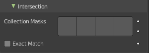
Collection Masks
Choose up to eight mask bits for masking.
Exact match
Require matching all intersections instead of just one.
Face Mask Filtering subpanel
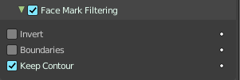
Filter Feature Lines using Freestlye Face Masks.
| Property | What it changes |
|---|---|
| Invert | Invert face mask filtering. |
| Boundaries | Filter feature lines based on face mask boundaries. |
| Keep Contour | Preserve contour lines while filtering. |
Chain
| Property | What it changes |
|---|---|
| Intersection with Contour | Allows intersection lines to be chained together with contour lines. |
| All Lines | Enabling this option will cause all lines to have the type of contour and to be chained together. |
| Loose Edges | Allow loose edges to be chained together. |
| Loose As Contour | Loose edges will have contour type. |
| Preserve Details | Keep the zig-zag noise in initial chanining. · Geometry Space: Use Geometry distance for chaining instead of image space. |
| Image Threshold | Segments with an image distance smaller than this value will be chained together. |
| Smooth tolerance | Strength of smoothing applied on jagged chains. |
| Angle Splitting | The angle in screen space below which a stroke is split into two. |
Vertex Weight Transfer subpanel
| Property | What it changes |
|---|---|
| Filter Source | If source mesh has vertex groups whose name starts with this string, then the vertex weight info will be transferred into weight groups in Grease Pencil strokes. · Invert Vertex Group: Inverts the selection. |
| Match Output | Transfer the filtered object vertex weights into Grease Pencil weight groups with the same names as the filtered ones. |
| Target | If Match Output is off, then a target vertex group has to be specified. If there are multiple weight groups copied into target, then the highest weight value is copied into it. |
Composition
| Property | What it changes |
|---|---|
| Overscan | A margin to prevent an abrupt end of the stroke at the edge of the image. · Image boundary trimming: Trim all edges right at the boundary of image (including overscan region) |
| Depth Offset | Move strokes slightly towards the camera to avoid clipping. · Towards custom camera: Offset strokes towards selected camera instead of the active camera. |
Bake subpanel
| Property | What it changes |
|---|---|
| Bake Line Art / Bake All | Bakes Line Art strokes for active Grease Pencil object within the start, end frame range in scene. Bake All bakes all Grease Pencil objects that contains at least one Line Art modifier. After baking, baked Line Art modifier will be deactivated automatically. |
| Clear Baked Line Art / Clear All | Clears baked line art frames within the scene frame range for active Grease Pencil object. Clear All applies the same operation for all Grease Pencil objects that contains at least one Line Art modifier. |
Mirror
The Mirror modifier for the Grease Pencil Object works in Object mode. It mirrors the object along its local X, Y and/or Z axes, across the Object Origin. It can also use another object as the mirror center, then use that object’s local axes instead of its own.
Object
Define an object to mirror at its origin instead of mirroring along the grease pencil origin.
You can animate it to move the mirror axis.
Influence
| Property | What it changes |
|---|---|
| Layer | Restricts the effect only to one layer or to any layers that share the same pass index. Click to pick the layer that you want to use. · Invert: Inverts the influence. |
| Layer Pass | The layer pass index. · Use Layer pass: Use the layer pass. · Layer pass value: The layer pass value. · Invert: Inverts the influence. |
| Material | Restricts the effect only to material that share the same material or pass index. Click to pick the material that you want to use. · Invert: Inverts the influence. |
| Material Pass | The material pass index. · Use Material pass: Use the Material pass. · Material pass value: The Material pass value. · Invert: Inverts the influence. |
Multiple Strokes
Adds multiple parallel copies of the stroke around the original stroke.
| Property | What it changes |
|---|---|
| Duplicates | The number of additional strokes. |
| Distance | Distance between the original and the duplicate strokes. |
| Offset | Control the offset position (inner or outer) for duplicate strokes. |
Fade
Fade out duplicate strokes, using their opacity or thickness.
| Property | What it changes |
|---|---|
| Center | Control the initial position for the fading. |
| Thickness | Fade influence on strokes thickness. |
| Opacity | Fade influence on strokes opacity. |
Influence subpanel
| Property | What it changes |
|---|---|
| Layer | Restricts the effect only to one layer or to any layers that share the same pass index. Click to pick the layer that you want to use. · Invert: Inverts the influence. |
| Layer Pass | The layer pass index. · Use Layer pass: Use the layer pass. · Layer pass value: The layer pass value. · Invert: Inverts the influence. |
| Material | Restricts the effect only to material that share the same material or pass index. Click to pick the material that you want to use. · Invert: Inverts the influence. |
| Material Pass | The material pass index. · Use Material pass: Use the Material pass. · Material pass value: The Material pass value. · Invert: Inverts the influence. |
Outline
Draws an outline around the grease pencil stroke.
This modifier requires to have a ACTIVE camera in the scene, since the outline is created from this active camera. And the outline is created from exact this view of the camera. So better switch to camera view to check if the view fits. You will get a warning in the modifier when the active camera is missing.
The active camera has the active orange triangle above the widget. You can also see the active camera in the Scene properties.
| Property | What it changes |
|---|---|
| Thickness | The thickness of the outline. |
| Keep Shape | Try to keep global shape. |
| Subdivisions | Subdivisions of the outline grease pencil stroke. |
| Sample Length | The distance between the vertices. |
| Outline material | Material used for the outline strokes. If no material is chosen then the material from the parent stroke is used. |
| Target object | A target object to define the stroke start. |
Influence subpanel
| Property | What it changes |
|---|---|
| Layer | Restricts the effect only to one layer or to any layers that share the same pass index. Click to pick the layer that you want to use. · Invert: Inverts the influence. |
| Layer Pass | The layer pass index. · Use Layer pass: Use the layer pass. · Layer pass value: The layer pass value. · Invert: Inverts the influence. |
| Material | Restricts the effect only to material that share the same material or pass index. Click to pick the material that you want to use. · Invert: Inverts the influence. |
| Material Pass | The material pass index. · Use Material pass: Use the Material pass. · Material pass value: The Material pass value. · Invert: Inverts the influence. |
Simplify
The Simplify modifier allows you to reduce the amount of points in the strokes. It tries to reduce points while maintaining the lines shape.
Mode
How to reduce points in the strokes.
| Property | What it changes |
|---|---|
| Fixed | Deletes alternated points in the strokes, except the start and end points. |
| Adaptive | Uses the RDP algorithm (Ramer-Douglas-Peucker algorithm) for points deletion. The algorithm try to obtain a similar line shape with fewer points. |
| Sample | Recreates the stroke geometry with a predefined length between points. |
| Merge | Simplifies the strokes by merging points that are closer than a specified distance to each other. |
| Iterations | Number of times to repeat the procedure. |
Influence subpanel
| Property | What it changes |
|---|---|
| Layer | Restricts the effect only to one layer or to any layers that share the same pass index. Click to pick the layer that you want to use. · Invert: Inverts the influence. |
| Layer Pass | The layer pass index. · Use Layer pass: Use the layer pass. · Layer pass value: The layer pass value. · Invert: Inverts the influence. |
| Material | Restricts the effect only to material that share the same material or pass index. Click to pick the material that you want to use. · Invert: Inverts the influence. |
| Material Pass | The material pass index. · Use Material pass: Use the Material pass. · Material pass value: The Material pass value. · Invert: Inverts the influence. |
Subdivide
The Subdivide modifier subdivide the strokes by inserting points between other points to the lines.
Subdivision Type
| Property | What it changes |
|---|---|
| Catmull-Clark | Subdivides and smooths the surfaces. |
| Simple | Only subdivides the surfaces, without any smoothing. |
Subdivisions
Number of subdivisions.
Influence subpanel
| Property | What it changes |
|---|---|
| Layer | Restricts the effect only to one layer or to any layers that share the same pass index. Click to pick the layer that you want to use. · Invert: Inverts the influence. |
| Layer Pass | The layer pass index. · Use Layer pass: Use the layer pass. · Layer pass value: The layer pass value. · Invert: Inverts the influence. |
| Material Pass | Restricts the effect only to material that share the same material or pass index. Click to pick the material that you want to use. · Use Material pass: Use the Material pass. · Material pass value: The Material pass value. · Invert: Inverts the influence. |
| Pass | The material pass index. · Invert: Inverts the influence. |